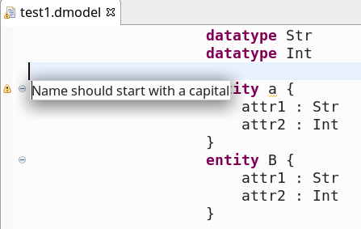

Model Validation
A model can be validated according certain validation rules. These rules have to be define by the meta modeller in the meta model. Error and warning messages can be reported and attached to model elements or text location. These messages are displayed in the Eclipse model text editor. More Information, see (Mooji et al., 2017a).
(Renz-Reichert, 2017) suggested to put as little as possible semantics into the grammar (e.g. "+" instead of "*") and to add this semantics to the validation code. This often allows to generate more meaningful domain errors.
Validation Example
Open the *Validator.xtend" file (automatically generated for a new project), e.g., "kurs.xtext.dataflow.validation.DataFlowDslValidator.xtend". Activate the commented code and modify it:
package kurs.xtext.dataflow.validation import org.eclipse.xtext.validation.Check import kurs.xtext.dataflow.dataFlowDsl.KComponent import kurs.xtext.dataflow.dataFlowDsl.DataFlowDslPackage class DataFlowDslValidator extends AbstractDataFlowDslValidator { public static val INVALID_NAME = 'invalidName' @Check def checkComponentStartsWithCapital(KComponent c) { if (!Character.isUpperCase(c.name.charAt(0))) { warning('Name should start with a capital', DataFlowDslPackage.Literals.KCOMPONENT__NAME, INVALID_NAME) } } }
Try your validator for your language in the Eclipse Runtime model editor. 
Notes:
- A validation rule is marked as such with the annotation "@Check". The argument is a model element of the type to be checked.
- The rule is checked during typing in the editor (@Check allows to control if a rule is checked during typing, when saving, or upon explicit request (see: org.eclipse.xtext.validation.CheckType; press "F3" when having the cursor on @Check)
- The rule above checks elements of type "KComponent". Errors/warning, if present, are attached to this model element.
- A rule can generate "errors", "warnings" und "infos". The ID (in our case "INVALID_NAME") allows a rule to be identified later, e.g., when implementing HotFixes for specific validation violations.